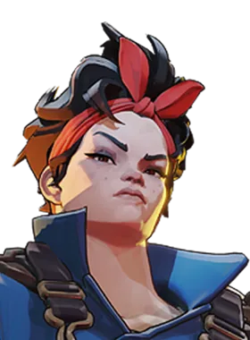

Surto Arcano
Arcane Surge
52.4%win rate quando comprado
2.437.731compras registradas
1.600custo em almas
2tier
Depois de Dash-Jump, a próxima habilidade que você usar dentro de 7s terá Alcance, Duração e Poder Espiritual bônus.
Em quais heróis ele aparece
 Bebop — ver guia
Bebop — ver guia
 Dynamo — ver guia
Dynamo — ver guia
 Graves — ver guia
Graves — ver guia
 Kelvin — ver guia
Kelvin — ver guia
 Lady Geist — ver guia
Lady Geist — ver guia

McGinnis — ver guia Seven — ver guia
Seven — ver guia
 Sinclair — ver guia
Sinclair — ver guia
 Solomon — ver guia
Solomon — ver guia
Baseado nas builds mais usadas que o site baixou do jogo.
Números reais de partidas, via deadlock-api.com.